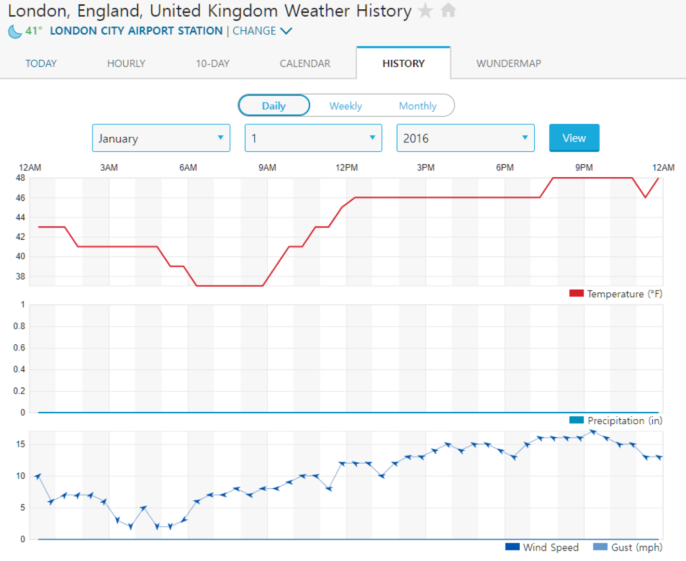
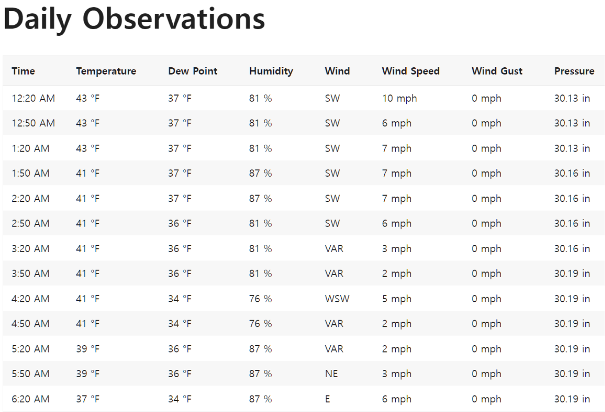

-
데이터의 형식이 맞아야 데이터를 가공할 수 있습니다.
데이터를 처리하기 전에 수집한 데이터의 형식을 알아봅시다.
-
조사한 지역은 영국 런던이고, 사용하는 값은 기온 데이터와 전력 데이터 입니다.
기온 데이터는 1시간 간격으로 화씨단위로(실험에선 섭씨단위로 변환) 값을 가지고 있고, 전력 데이터는 Watt단위로 값을 가지고 있습니다.
전력 데이터의 형식이 일반적인 날짜형식인 datetime형이 아니기 때문에 서로의 데이터를 같이 쓰려면 전력 데이터의 날짜 형식을 수정해줘야 합니다. -

▲ wunderground페이지에서 런던의 날씨 정보를 가지고온 모습▲ 해당 사이트는 30분 단위로 기온 값을 가지고 있다.
 ▲ 런던 가정의 전력 사용량(watt)과 날짜(Unix Timestamp)가 저장된 파일
▲ 런던 가정의 전력 사용량(watt)과 날짜(Unix Timestamp)가 저장된 파일